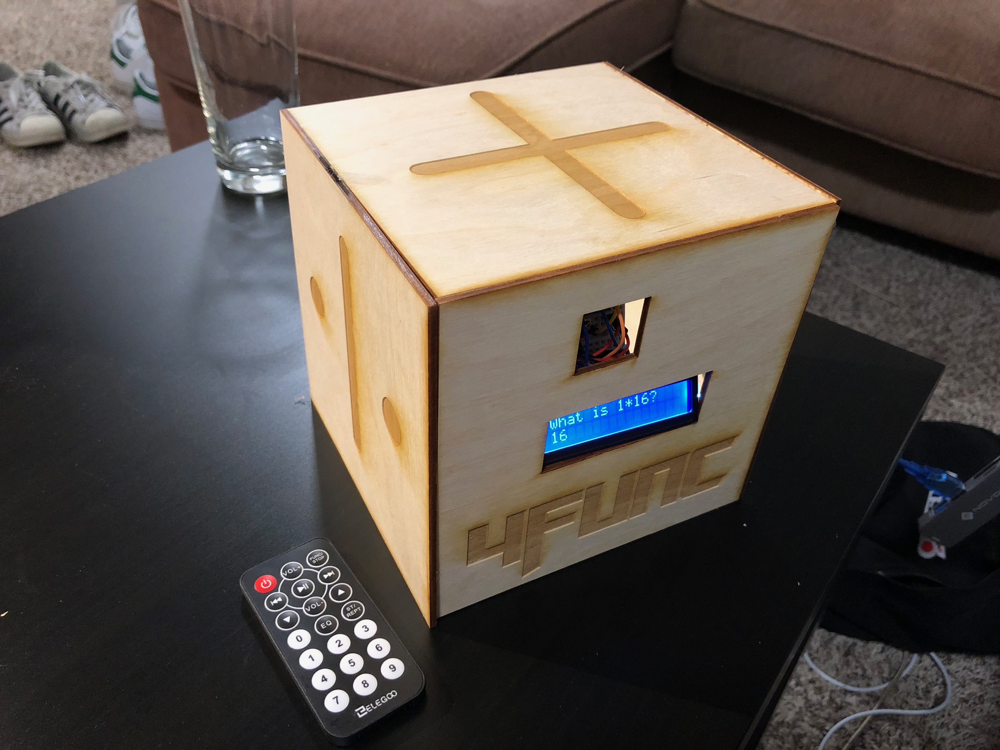
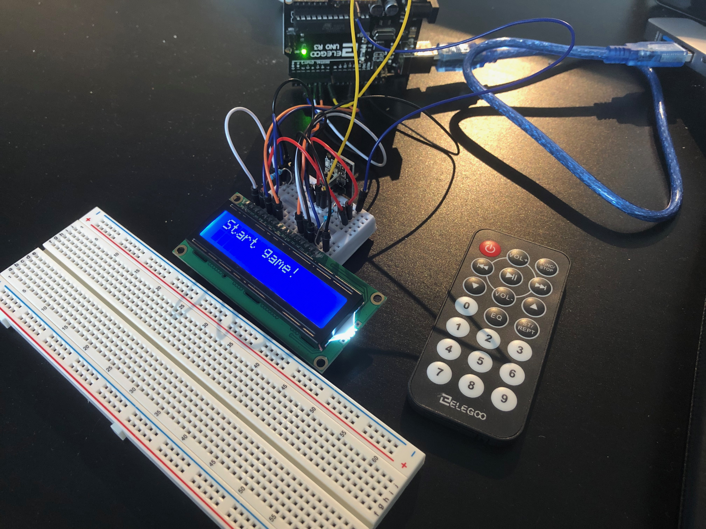
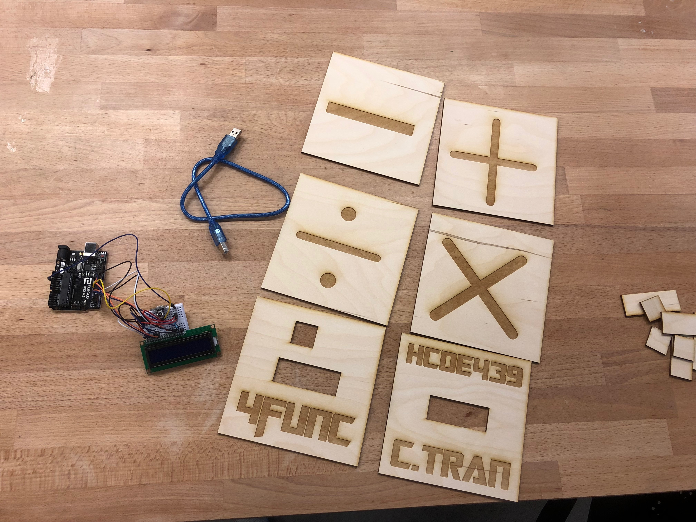
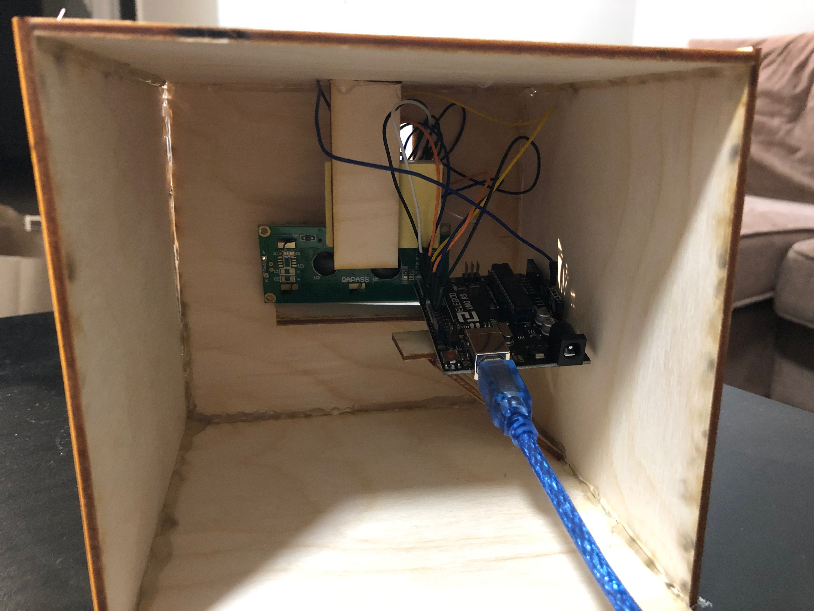
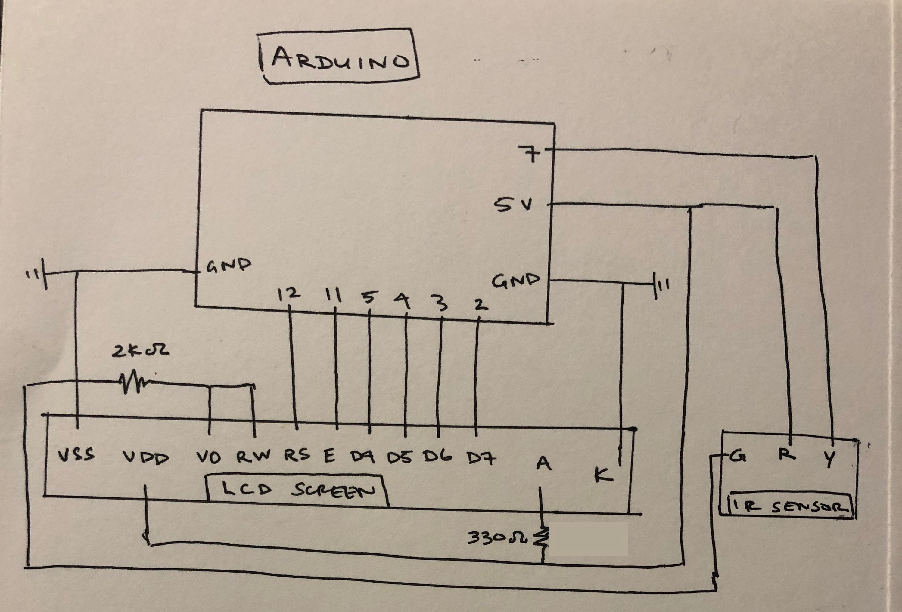
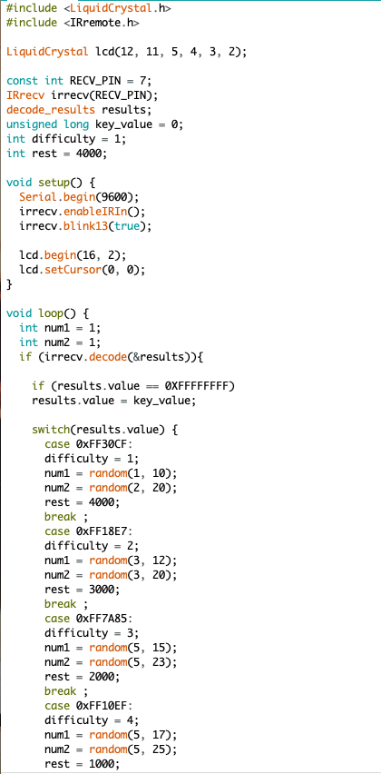
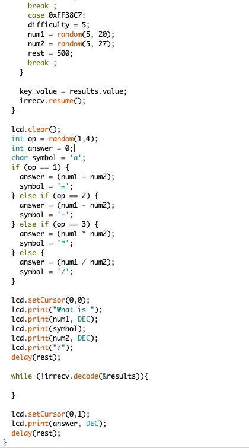

4Func serves to be a replacement game of mental math problems, similar to multiplication table exercises given to elementary students and combining it with traditional flash card memorization.
  
A laser-cut box houses mini-breadboard, which connects the IR sensor and LCD screen to the Arduino.

An LCD screen and IR receiver sensor is conneceted a mini-breadboard and Arduino. A 2K Ω resistor is connected to the "RW" pin on the LCD screen, connected to ground (in lieu of the potentiometer) which resulted with the best viewable brightness. A 330 Ω resistor is connected to the "A" pin on the LCD screen to set backlight level.
 
Users can control the game's difficulty, which changes the speed of the questions and size of numbers, by selecting 1-5 on an IR remote. Numbers for the questions and their operation are chosen at random. Answers are displayed after a short delay period, which is determined by the difficulty level selected on the remote.